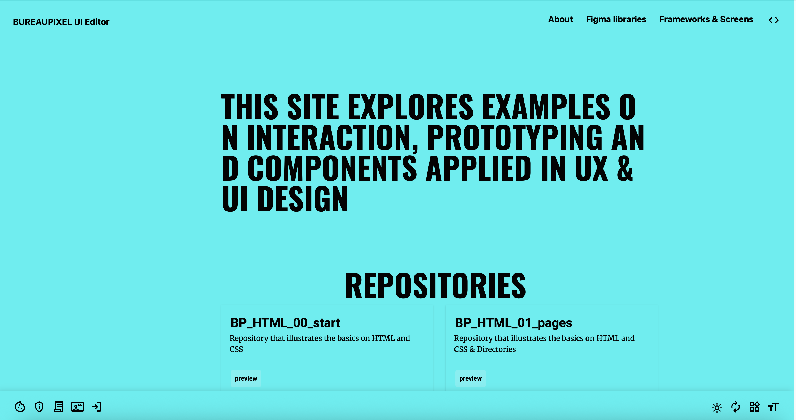

Webpagina’s maken met HTML en CSS
Lana van Dessel - 1GDM1
Datum: 16 oktober 2025
In de vierde les van Prototyping Tools leerden we hoe je een ontwerp omzet in een echte website. We gebruikten HTML voor de structuur van de pagina en CSS voor de vormgeving. Het doel was om een digitale versie van ons logboek te maken, zodat alle lessen en reflecties overzichtelijk te zien zijn. We leerden niet alleen coderen, maar ook hoe je informatie netjes en duidelijk presenteert.
Wat ik heb gedaan
We begonnen met uitleg over een HTML-document: de head, body en elementen zoals <header>, <main> en <footer>. Daarna maakten we stap voor stap onze eigen webpagina. Ik gebruikte mijn logboek van eerdere lessen als basis en maakte er een echte website van met meerdere pagina’s.
Daarna leerden we CSS gebruiken om de website mooi te maken. Ik probeerde verschillende lettertypes, kleuren en marges om alles mooi op elkaar af te stemmen. Ook maakte ik de navigatie duidelijk met knoppen die netjes en modern zijn. Het was in het begin lastig, omdat kleine foutjes in de code meteen invloed hebben op de hele pagina. Maar langzaam begreep ik hoe HTML en CSS samenwerken.
Ook oefende ik met flexbox om kolommen en secties netjes uit te lijnen. Dit was nieuw, maar het is handig om een website flexibel te maken voor verschillende schermen. Aan het einde had ik een eerste versie van mijn logboekwebsite klaar. Het zag er nog niet perfect uit.
Reflectie
Deze les was interessant, maar ook best moeilijk. HTML en CSS voelen in het begin technisch aan, vooral omdat ik gewend ben aan visuele tools zoals Figma. Toch gaf het werken met code me beter inzicht in hoe websites echt zijn opgebouwd. Het voelde fijn om niet alleen te ontwerpen, maar mijn ontwerp echt tot leven te brengen.
Wat ik nog lastig vond, is overzicht houden in mijn code. Soms raakte ik de draad kwijt door alle tags en namen. Daarom heb ik geleerd om HTML netjes in te delen met inspringingen en duidelijke namen. Ook begreep ik beter hoe belangrijk het is om CSS consequent te gebruiken, zodat de website overzichtelijk en netjes blijft.
Voor de volgende lessen wil ik meer leren over CSS-layouts zoals grid en animaties. Ook wil ik mijn website interactiever maken, bijvoorbeeld met knoppen die bewegen of van kleur veranderen. Mijn doel is een website maken die duidelijk en prettig is voor de gebruiker. Deze les motiveerde me om meer te leren over webdevelopment en te zien hoe design en techniek samenkomen.
Schets perronscherm
